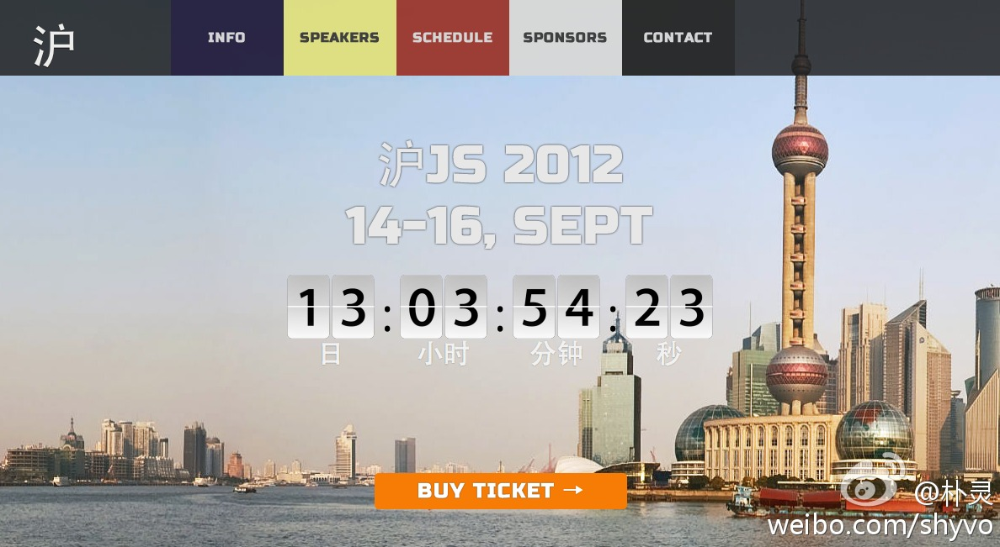

这次CSDN与OpenStack社区的合作举办的2012 OpenStack 亚洲技术大会，是一个很好的合作样本。大会项目经理项征的总结是干货哈。可以了解下这种... ——看到xiangzheng0909的博文《如何办社区型大会（此乃工作总结）》有感而发的评论。网页链接
到处都听到好的社区运营人员难召，那是当然的。我喜欢打比喻，社区运营这种工作类似家庭主妇的工作，要做的事情非常杂，每天都很忙碌，但最后往往还不显功劳。衡量家庭主妇的工作成效不在于是否辛苦，是否花得时间多，而是要看家人的满意程度。为社区运营人员定死板KPI的管理者适合请小时工或者保姆。
回复@yiluoseraph:为了防止滥用博客发垃圾广告。因为CSDN博客page rank比较高，容易被搜索引擎收录。 //@yiluoseraph:为什么会有这个限制？@Ada李力:这周有几起通过CSDN后台开通权限帮助博主发博文的行为。因为首次开通CSDN博客后，有三天的禁言期，如果博客开通当天就想发布第二天的活动，那是真着急。建议没有CSDN博客的先开一个放着。
现在很多人是有辆车开就不错了，没那么多选择。等买第二辆车的时候才会去想自己真正想要的车是啥样。@古典:你是辆什么车？： 你是辆什么车？ 在去往上海的飞机上，我遇到旁坐的一位先生，我们要共度一个多小时。由于飞行实在无聊，而时间又不长不短无法睡着，我们都选择了聊天。在互相寒暄和交换完各自... 网页链接 （使用新浪长微博工具发布 网页链接）
门票只要200元，两天会议，还管中饭，真不知道成本怎么控制的。帮转。@朴灵:本来CNode社区和JavaScript社区的会议都是免费参加的。但是沪JS的演讲阵容实在太强大了，搞得我们都不好意思不收费。趁现在还是8折，我自己掏钱买了一张票，打算送给社区有缘人，以什么样的形式送呢？ 沪JS 2012 - September 14-16, Shanghai 网页链接 
感性在理性之上的人，容易受荷尔蒙影响吧。@麻辣情医吴迪:焦虑的中国如今是世界第一婚姻出轨大国，男女都很生猛（千万不要以为只有男人在搞）为什么？非常欣赏清华政治学女教授刘瑜的见解：婚外恋是无力的人们自制的伪钞，是准入成本门槛最低的对生活的“改变”，一男一女只要有点荷尔蒙就行了，而感受又是超刺激的，貌似无聊的生活就有了意义